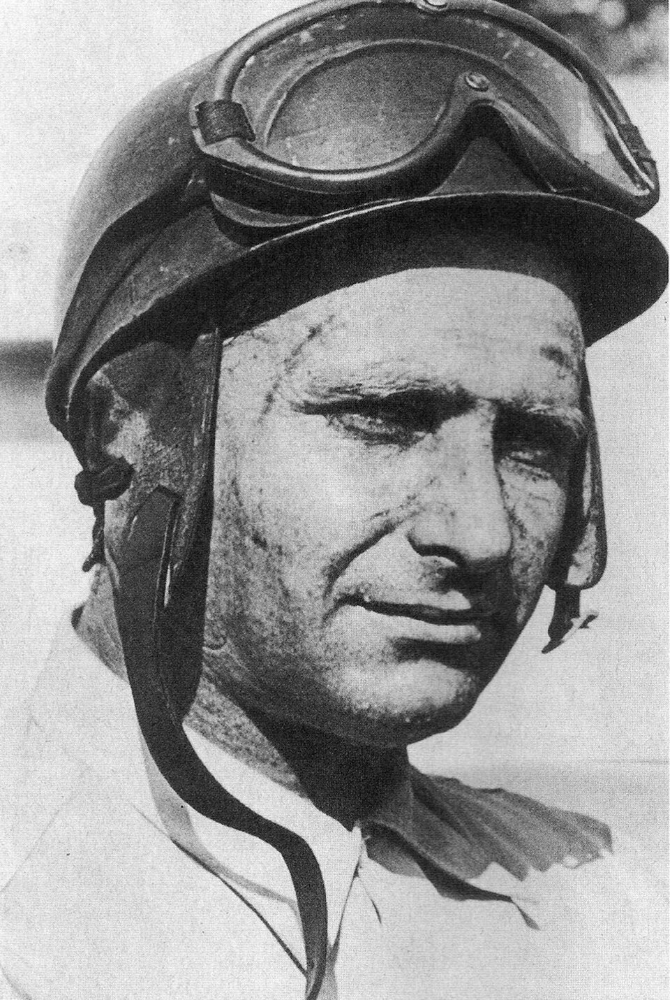

A pilóták felkészülése
A versenyzők extrém fizikai és mentális terhelésnek vannak kitéve. Egy F1-es autó vezetése 5G-s erőhatásokkal jár, ezért a pilóták napi szinten edzenek, hogy bírják a versenyek megpróbáltatásait.
Max Verstappen és Lewis Hamilton a modern F1 legnagyobb alakjai. Leclerc, Norris és Alonso kiemelkedő tehetségek, és folyamatosan formálják a mezőny erőviszonyait.
A Legjobb versenyzők:
1. Lewis Hamilton
A brit pilóta a statisztikák alapján a sportág történetének legsikeresebb versenyzője,
aki hét világbajnoki címével beállította Michael Schumacher rekordját. Pályafutását a
McLarennél kezdte, ahol már második szezonjában, 2008-ban felért a csúcsra. Igazi dominanciáját
azonban a Mercedes csapatával érte el, ahol hat további bajnoki címet szerzett a hibrid korszakban.
Ő tartja a legtöbb futamgyőzelem (105), a legtöbb pole pozíció és a legtöbb dobogós helyezés rekordját
is. Hamilton nemcsak a pályán, hanem azon kívül is aktív, társadalmi kérdésekben és a divatvilágban
is meghatározó alak. Karrierje következő nagy fejezete 2025-ben kezdődik, amikor a Ferrarihoz igazol.

2. Michael Schumacher
A „Kerpeni Kaiser” neve évtizedekig a győzelem szinonimája volt, és ő tette globális szupersztárrá a modern
Formula–1-et. Első két világbajnoki címét a Benettonnal nyerte a kilencvenes évek közepén, majd a Ferrarihoz
igazolt, hogy feltámassza a küszködő olasz márkát. Kitartása és technikai precizitása meghozta gyümölcsét:
2000 és 2004 között zsinórban ötször lett bajnok a vörös autóval. Schumacher híres volt könyörtelen
versenyszelleméről és arról, hogy a fizikai felkészültséget új szintre emelte a sportágban. 2012-es végleges
visszavonulásakor szinte minden létező rekordot ő birtokolt. Tragikus síbalesete óta a nyilvánosságtól
elzárva él, de öröksége megkerülhetetlen.

3. Ayrton Senna
Sokan őt tartják a valaha volt leggyorsabb és legtehetségesebb pilótának, aki misztikus és megalkuvást nem tűrő
stílusával bűvölte el a rajongókat. Pályafutása során három világbajnoki címet nyert a McLaren színeiben, és Alain
Prosttal vívott párharca a sportág aranykorának számít. Senna az esős versenyek és az időmérő edzések specialistája
volt, aki gyakran határokat feszegetve autózott. Hazájában, Brazíliában nemzeti hősnek számított, mivel rengeteget
jótékonykodott és reményt adott az embereknek. 1994-es imolai tragédiája sokkolta a világot, és alapjaiban változtatta
meg az F1 biztonsági előírásait. Legendája ma is él, sisakjának sárga-zöld színei az autóversenyzés szimbólumaivá váltak.

4. Max Verstappen
A jelenkor szupersztárja, aki minden idők legfiatalabb debütálójaként (17 évesen) és legfiatalabb futamgyőzteseként robbant
be a köztudatba. A holland pilóta 2021-ben, egy drámai és vitatott szezonzárón szerezte meg első világbajnoki címét Lewis
Hamilton ellen. Azóta a Red Bull Racinggel szinte verhetetlen párost alkotnak, és sorra dönti meg a dominanciára vonatkozó rekordokat.
Verstappen híres agresszív előzéseiről, magabiztosságáról és arról, hogy bármilyen körülmények között képes kihozni a maximumot az
autóból. Fiatal kora ellenére már most a sportág legnagyobbjai között emlegetik, hiszen háromszoros (és jó eséllyel többszörös) bajnok.
Brutális munkatempója és győzni akarása miatt a „számítógépes pontosságú” versenyzőként is jellemzik.
.jpg "Max Verstappen")
5. Juan Manuel Fangio
Az 1950-es évek „Maestrója”, aki a Formula–1 hőskorának abszolút ura volt. Fangio öt világbajnoki címet szerzett, amit csaknem fél évszázaddal
később tudtak csak túlszárnyalni. Különlegessége, hogy címeit négy különböző istállóval (Alfa Romeo, Maserati, Mercedes, Ferrari) nyerte el,
bizonyítva, hogy bármilyen technikával képes a csúcsra érni. Győzelmi aránya a mai napig verhetetlen: a futamai közel felét megnyerte,
aminél jobb statisztikát senki nem tud felmutatni. Pályafutását 40 felett teljesítette, abban a korban, amikor a versenyzés még életveszélyes
kaland volt biztonsági övek és bukókeretek nélkül. Szerény, de rendkívül intelligens versenyzőként maradt meg az emlékezetben.
